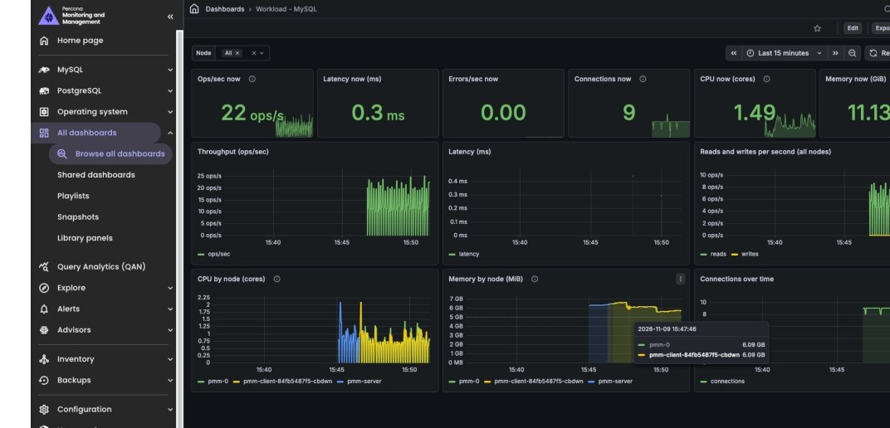
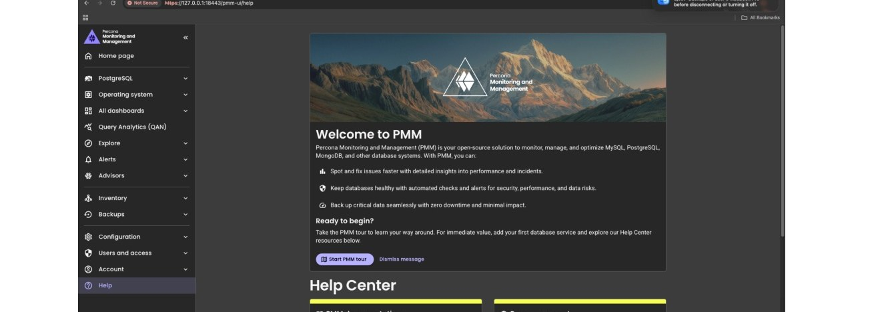
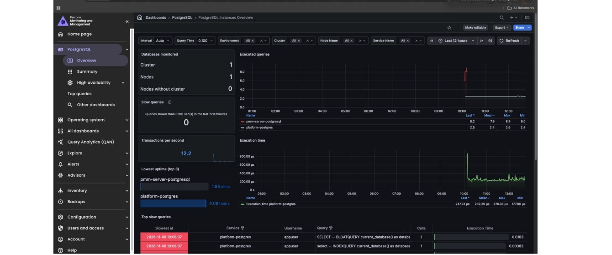

Demo story · Local Kubernetes
PostgreSQL, SAP ASE, MongoDB and MySQL deployed, monitored and tested on minikube.
RunShore records a PASS or FAIL result, a timing and an evidence file for every recovery test, and a log for every action. This page brings the published evidence together.
Screenshots and logs, cleaned of account numbers, subscription IDs, cluster addresses and private IP addresses.
PostgreSQL, SAP ASE, MongoDB and MySQL deployed, monitored and tested on minikube.
The same workflow on AWS EKS, Azure AKS and Google GKE, ending with a verified destroy.
WordPress, IDURAR, Django and Spring Boot on RunShore databases, observed in PMM, New Relic and Splunk.
Cloud Audit and VERIFY: listing what is running and proving a destroy left nothing billable.
Counts of passed and failed runs, failures included.
| Database | Test | Local Kubernetes | AWS | Azure | Google Cloud |
|---|---|---|---|---|---|
| PostgreSQL | PITR | 15 / 0 | 6 / 0 | 2 / 0 | 2 / 0 |
| PostgreSQL | Failover | 31 / 7 | — | — | — |
| PostgreSQL | Replication | 21 / 2 | — | — | — |
| MySQL | PITR | 31 / 7 | 4 / 0 | 4 / 0 | 4 / 0 |
| MySQL | Failover | 24 / 14 | — | — | — |
| MySQL | Replication | 24 / 0 | — | — | — |
| MongoDB | PITR | 9 / 0 | 6 / 0 | 5 / 0 | 5 / 0 |
| MongoDB | Failover | 13 / 5 | — | — | — |
| MongoDB | Replication | 14 / 8 | — | — | — |
| SAP ASE | PITR | 22 / 12 | — | — | — |
Runs passed / failed, from RunShore's results ledger on 3 November 2026. A dash means no run is recorded. Failed runs are kept, not deleted; the latest run of every test passed. Failover and replication have been recorded on local Kubernetes; point-in-time recovery (PITR) on all three clouds.

Operations per second, latency, throughput, CPU, memory and connections during a workload.

The service and its four monitoring agents running after registration.

Database activity, query execution and transactions per second during the Django workload.
Each screenshot shows one moment in a recorded test environment. The reports above give the full context: what ran, when, and its result.